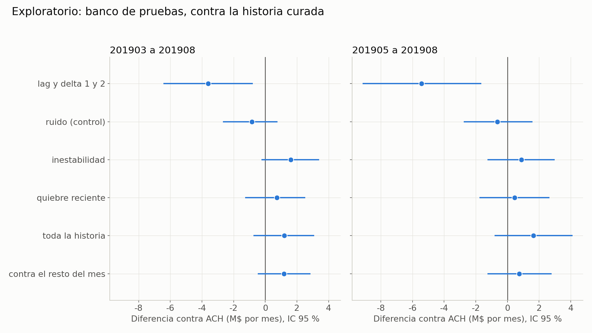
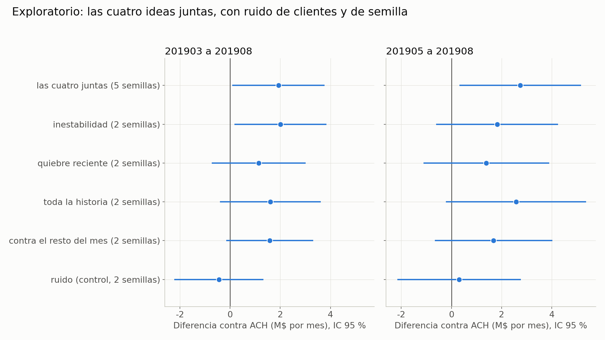

Experimento feature_historico dónde estamos
Versión de trabajo para tutoría del grupo completo. Conserva el orden y el enfoque del PDF nuevo de Ezequiel, incorporando la evidencia publicada hasta el commit 6cf189c y nuestras corridas de Google Cloud. El PDF original se conserva sin editar.
Comparaciones de veinte semillas: cierre auditado del 7 de noviembre de 2026. Integrantes: Tomás Henseler, Clara M. Rodríguez y Ezequiel Abregú. Tutor: Alejandro Bolaños.
La historia básica aporta valor, pero mejorarla es más difícil. El experimento original no superó la regla propia de ganancia; las exploraciones posteriores dejaron señales pequeñas. El nuevo banco por clientes encuentra una señal intermedia para cuatro bloques juntos. Nuestro aporte compara cambios relativos y rankings con veinte semillas por estrategia: ambos reducen la AUC media frente a ACO, pero muestran mayor ganancia media de banda en agosto. La señal económica es más consistente para cambios relativos y sigue siendo exploratoria.
El problema y el baseline
El objetivo del ejercicio es identificar clientes por abandonar el banco. En la métrica económica usada por el grupo, contactar a un BAJA+2 suma 1.072.500 y contactar a otro cliente resta 27.500. Un acierto compensa 39 errores; el punto de equilibrio del estímulo corresponde a una probabilidad de BAJA+2 de 2,5 %. Estos valores son los del ejercicio, no una estimación de beneficio real del banco.
El baseline de la cátedra ya contiene historia: 152 variables actuales, lag1 y lag2, y delta1 y delta2, total 760 columnas. Lag busca el mes calendario exacto del mismo cliente; delta es actual menos lag. No se incluyen ID, foto_mes ni clase como predictores en los notebooks revisados.
| Control | Entrenamiento | Ajuste y función |
|---|
| A | Mayo–junio | Control del experimento principal; ventana adaptada para tener hasta cuatro meses anteriores |
| A-consigna / AC | Marzo–junio | Conserva meses de la consigna, con parámetros elegidos sobre A; AC añade correcciones de dos roturas Master en octubre |
| ACO | Marzo–junio | Ajuste propio del 07, 339 árboles; control de nuestra serie de AUC |
| ACH | Marzo–junio o banco por clientes, según el experimento | AC más 120 features de historia curada sobre 30 variables; no es el baseline de la cátedra |
La evaluación original usa agosto para AUC, early stopping y N; octubre para el contraste principal y septiembre como control adicional. Entrenamiento positivo: BAJA+1 o BAJA+2; AUC de evaluación positiva: BAJA+2. La ganancia se calcula exclusivamente con BAJA+2. Los distintos ajustes, ventanas y métricas no se mezclan en un único ranking de ganadores.
Diferencias documentadas frente a la referencia de la cátedra: saneamiento retrospectivo de roturas; septiembre como mes adicional; y, para A, ventana mayo–junio. La búsqueda propia de marzo–junio del 07 elevó la AUC de selección, pero no la ganancia posterior. Consultar al tutor qué adaptaciones acepta.
Hipótesis original: al menos una variante con tres o cuatro meses mejora la ganancia de A en octubre bajo una regla propia predefinida. Hipótesis secundaria: la ganancia crece al agregar meses. La principal no se confirmó bajo esa regla; la secundaria tuvo una señal descriptiva más clara de dos a tres meses que de tres a cuatro.
La regla no fue exigida por la consigna: pide p de Wilcoxon ajustado por Holm menor que 0,05 en seis contrastes, diferencia media positiva en octubre y no negativa en septiembre. Todas las variantes cumplieron las condiciones de dirección, pero ninguna la de p ajustado. No pasar no demuestra efecto nulo.
Qué se probó y qué dio
| Paso | Pregunta | Resultado disponible |
|---|
| Preparación y mínimo 01–02 | ¿Datos, clase y pipeline están listos? | Controles de filas/clases; ensayo A–LT4 con cinco semillas en agosto |
| 1 Prueba principal 03–04 | ¿Tres o cuatro meses mejoran sobre dos? | Ventajas medias de ganancia, ninguna pasa la regla de seis contrastes |
| 2 Exploraciones 05–11 | ¿Otras representaciones o puntajes suman? | Señales pequeñas y dependientes del mes; resultados posteriores a abrir test |
| 3 Cambio de pregunta 12 | ¿Cuánto vale la historia y entrenar más cerca? | Unos 20 M/mes de banda al recuperar historia básica; mejoras variables al acercar la ventana |
| 4 Banco por clientes 13 | ¿Podemos medir con menor ruido? | Cuatro bloques solos: +0,74 a +1,60 M/mes frente a ACH en el banco |
| 5 Combinación 14 | ¿Los cuatro bloques juntos se complementan? | +1,9263 M/mes; señal intermedia; no supera claramente la mejor idea sola |
| Aporte complementario | ¿Cambiar la representación de la historia mejora ACO en agosto? | Cambios relativos y rankings, explicados y comparados directamente con veinte pares por estrategia |
Preparación y prueba mínima
El original tiene 4.707.495 filas y 154 columnas; el corte 2019 tiene 1.563.565 filas y cero claves duplicadas. La clase se construye con calendario hasta diciembre de 2019. Se identificaron 23 casos de variable/mes roto y luego dos correcciones Master adicionales. La detección de calidad usa información retrospectiva y se declara como limitación. El ensayo mínimo 02 compara A con LT4 en agosto y sirve para probar el pipeline; no es un test independiente.
Paso 1 La regla y los dos controles
| Variante contra A | Δ septiembre M | Δ octubre M | p sin ajustar | p Holm | Pasa regla |
|---|
| L3 | +4.6750 | +3.4650 | 0.1211 | 0.2422 | No |
| L4 | +6.0225 | +5.0325 | 0.0293 | 0.1465 | No |
| T3 | +5.0600 | +3.6300 | 0.0410 | 0.1484 | No |
| T4 | +4.1525 | +3.6025 | 0.1562 | 0.2422 | No |
| LT3 | +6.1875 | +5.4175 | 0.0117 | 0.0703 | No |
| LT4 | +5.1150 | +5.2250 | 0.0371 | 0.1484 | No |
L suma lags/deltas, T suma pendiente, promedio, mínimo y máximo, y LT combina ambas. Las ventanas extendidas se adaptan al tipo de variable. Las diez configuraciones se evaluaron con diez semillas cada una. LT3 es la más cercana, pero p Holm 0,0703 no cumple el umbral. Agregar semillas hasta que el p baje no es una regla válida de parada.
Paso 2 Exploraciones de 05 a 11
| Notebook | Qué agrega | Lectura |
|---|
| 05 | Ensambles y segundas diferencias | Ensambles con señales puntuales; segundas diferencias sin mejora consistente |
| 06 | Ratio3, rachas de ceros y combinación | Ratio3 dejó señal de ganancia; rachas solas generalmente desfavorables |
| 07 | Parámetros propios para marzo–junio | Mejor AUC de selección sin mejora de ganancia posterior |
| 08 | Historia curada, lags/tendencias sin quitar meses y mezclas | Señales más favorables en octubre que en septiembre |
| 09 | Eventos, ratios entre tarjetas, puntaje y hojas RF | Ahora sí hay resultados publicados en 6cf189c; el informe anterior con fuente 3b44f21 quedó desactualizado |
| 10 | Puntaje actual separado del pasado y otras particiones por cliente | Permite distinguir aporte del nivel actual y de la trayectoria de riesgo |
| 11 | Puntaje pasado con particiones B y C | Explora sensibilidad a cómo se divide a los clientes |
La historia curada (ACH) usa ratio3 (actual frente a promedio de tres fotos), z4 (apartamiento frente al pasado), relmax4 (actual frente a máximo previo) y mes_ratio3 (posición del ratio dentro del mes). El puntaje pasado usa predicciones de un modelo construido para no entrenar con el cliente que recibe el puntaje.
Para no seleccionar solo ejemplos favorables, se conservan todos los contrastes por semilla de 09–11. Diferencias de ganancia contra el control indicado; banda: promedio entre 3.000 y 6.000 envíos.
Contrastes del 09
| Variante | Control | Δ ganancia septiembre M | Δ ganancia octubre M | Δ banda octubre M |
|---|
| ACH | AC | +1.5675 | +5.1975 | +5.4438 |
| ACE | AC | -0.4400 | +5.6100 | +5.3351 |
| ACR | AC | -1.5950 | +5.1150 | +5.9371 |
| ACP | AC | +4.7850 | +4.1250 | +5.9410 |
| ACF | AC | +1.5400 | +5.8300 | +5.3191 |
| ACK | AC | +0.7425 | +5.2525 | +4.0581 |
| ACX | AC | +1.0725 | +6.1325 | +7.2899 |
| ACE | ACH | -2.0075 | +0.4125 | -0.1087 |
| ACR | ACH | -3.1625 | -0.0825 | +0.4934 |
| ACP | ACH | +3.2175 | -1.0725 | +0.4972 |
| ACF | ACH | -0.0275 | +0.6325 | -0.1247 |
| ACK | ACH | -0.8250 | +0.0550 | -1.3857 |
| ACX | ACH | -0.4950 | +0.9350 | +1.8461 |
Contrastes del 10
| Variante | Control | Δ ganancia septiembre M | Δ ganancia octubre M | Δ banda octubre M |
|---|
| ACH | AC | +1.5675 | +5.1975 | +5.4438 |
| ACP | AC | +4.7850 | +4.1250 | +5.9410 |
| ACP0 | AC | +5.3625 | +3.0525 | +4.3214 |
| ACPH | AC | +4.7300 | +6.7100 | +5.3088 |
| ACP_B | AC | +5.3350 | +4.6750 | +4.4189 |
| ACP_C | AC | +5.8300 | +5.7200 | +4.5517 |
| ACP | ACH | +3.2175 | -1.0725 | +0.4972 |
| ACP0 | ACH | +3.7950 | -2.1450 | -1.1224 |
| ACPH | ACH | +3.1625 | +1.5125 | -0.1349 |
| ACP_B | ACH | +3.7675 | -0.5225 | -1.0249 |
| ACP_C | ACH | +4.2625 | +0.5225 | -0.8921 |
| ACPH | ACP0 | -0.6325 | +3.6575 | +0.9874 |
Contrastes del 11
| Variante | Control | Δ ganancia septiembre M | Δ ganancia octubre M | Δ banda octubre M |
|---|
| ACH | AC | +1.5675 | +5.1975 | +5.4438 |
| ACPH | AC | +4.7300 | +6.7100 | +5.3088 |
| ACPH_B | AC | +4.6200 | +7.5900 | +6.4594 |
| ACPH_C | AC | +5.9125 | +6.2425 | +5.9345 |
| ACPH | ACH | +3.1625 | +1.5125 | -0.1349 |
| ACPH_B | ACH | +3.0525 | +2.3925 | +1.0157 |
| ACPH_C | ACH | +4.3450 | +1.0450 | +0.4908 |
Paso 3 Cuánto vale la historia en el 12
AC contra ACS (ACS usa solo 152 variables actuales) mejora la banda media por semilla en +20,1406 M en septiembre y +19,9258 M en octubre. La ganancia en N cambia +18,59 y +19,36 M. Es una comparación económica distinta de nuestra ablación de AUC, que dio +0,006477 AUC media en agosto con diez semillas y parámetros del 07.
El 12 también acerca los meses de entrenamiento para AC, ACH y variantes de puntaje pasado. Los efectos varían por modelo, partición y mes. Estas son las comparaciones completas por semilla:
| Variante | Control | Δ ganancia septiembre M | Δ ganancia octubre M | Δ banda octubre M |
|---|
| AC | ACS | +18.5900 | +19.3600 | +19.9258 |
| ACH | AC | +1.5675 | +5.1975 | +5.4438 |
| ACPH | AC | +4.7300 | +6.7100 | +5.3088 |
| ACPH_B | AC | +4.6200 | +7.5900 | +6.4594 |
| ACPH_C | AC | +5.9125 | +6.2425 | +5.9345 |
| AC_R | AC | +1.5400 | +9.2400 | +6.4355 |
| ACH_R | AC | +6.7375 | +9.3775 | +7.5309 |
| ACPH_R | AC | +7.4800 | +8.3600 | +6.8347 |
| ACPH_R_B | AC | +6.8200 | +7.8100 | +7.5501 |
| ACPH_R_C | AC | +8.8825 | +8.8825 | +7.8672 |
| ACH_R | AC_R | +5.1975 | +0.1375 | +1.0954 |
| ACPH_R | AC_R | +5.9400 | -0.8800 | +0.3991 |
| ACPH_R_B | AC_R | +5.2800 | -1.4300 | +1.1146 |
| ACPH_R_C | AC_R | +7.3425 | -0.3575 | +1.4316 |
| ACH_R | ACH | +5.1700 | +4.1800 | +2.0871 |
| ACPH_R | ACPH | +2.7500 | +1.6500 | +1.5258 |
| ACPH_R_B | ACPH_B | +2.2000 | +0.2200 | +1.0907 |
| ACPH_R_C | ACPH_C | +2.9700 | +2.6400 | +1.9326 |
Paso 4 Banco de pruebas del 13
Banco exploratorio: marzo–agosto, cinco grupos de clientes, dos semillas. El modelo predice clientes no vistos, pero entrena con los mismos meses de calendario que evalúa. No es validación fuera de tiempo. No carga septiembre ni octubre. Se usa la ganancia promedio de la banda, frente a ACH. Los intervalos de esta tabla son los reportados por el 13 y no incorporan la misma estimación de ruido de semillas que la tabla del 14.
| Variante | Idea | Δ M por mes frente a ACH | IC reportado |
|---|
| ACH_V | Inestabilidad: variación de niveles y cambios | +1.6009 | -0.2354 a 3.4063 |
| ACH_Q | Quiebre reciente, peor cambio y cantidad de caídas | +0.7395 | -1.2638 a 2.5184 |
| ACH_T | Media/máximo de todo el pasado y tiempo desde el máximo | +1.2028 | -0.7427 a 3.0956 |
| ACH_Z | Ranking mensual de cambios con cero fijo | +1.1765 | -0.4686 a 2.8629 |

Banco del 13 y diferencias de ganancia frente a ACH Fuente Ezequiel 6cf189c
Esto también limita la novedad de nuestras pruebas: persistencia y rankings tienen parentesco con quiebre y ranking de cambios, aunque difieren en fórmulas, variables, control (ACO frente a ACH), métrica (AUC frente a ganancia) y esquema de evaluación. No afirmamos originalidad de esas familias sin aclarar ese solapamiento.
Paso 5 Las cuatro ideas juntas en el 14
ACH_4 añade 300 columnas a ACH. Se comparan con cinco semillas sobre el banco por clientes; las candidatas individuales heredadas tienen dos semillas. El error total reportado combina estimaciones de variación de clientes y de semillas; no se interpreta como incertidumbre temporal.
| Variante frente a ACH | Semillas | Δ M por mes | IC reportado total |
|---|
| ACH_4 | 5 | +1.9263 | 0.0876 a 3.7651 |
| ACH_V | 2 | +2.0047 | 0.1717 a 3.8377 |
| ACH_Q | 2 | +1.1434 | -0.7270 a 3.0137 |
| ACH_T | 2 | +1.6066 | -0.4031 a 3.6163 |
| ACH_Z | 2 | +1.5803 | -0.1493 a 3.3098 |
| ACK | 2 | -0.4475 | -2.2270 a 1.3320 |

Combinación del 14 frente a ACH e ideas individuales Fuente Ezequiel 6cf189c
La combinación cumple la categoría de señal intermedia fijada para ese análisis: de +1,5 a menos de +3 M. Su +1,9263 M no supera numéricamente a inestabilidad sola (+2,0047 M), cuya comparación tiene menos semillas y no permite concluir equivalencia. En mayo–agosto la combinación da +2,7488 M; el ensamble reporta +1,9828 M. Queda pendiente la evaluación que propone el PDF en septiembre/octubre; esos meses ya fueron consultados, así que tampoco sería una confirmación independiente.
Dos estrategias de historia evaluadas con veinte semillas
Comparamos dos formas de representar la historia de un cliente: su cambio relativo respecto de sí mismo y su posición respecto de los demás clientes del mes. Cada estrategia se añade por separado al baseline ACO de 760 columnas; no se reemplazan las variables originales, sus lags ni sus deltas.
Cambios relativos: medir la variación respecto del propio pasado
La pregunta es si una caída representa un cambio importante para ese cliente, aunque su nivel de actividad sea muy distinto del de otros. La diferencia absoluta ya está en el baseline; esta estrategia agrega una diferencia normalizada por el tamaño de los valores comparados.
Para cada una de 129 variables numéricas seleccionadas se compara el valor actual con el de uno y dos meses atrás. Las dos features son:
r1 = (actual - lag1) / (abs(actual) + abs(lag1))
r2 = (actual - lag2) / (abs(actual) + abs(lag2))
El resultado está entre -1 y 1. Dos ceros observados producen cero; si falta cualquiera de los valores, se conserva NaN. No se divide solamente por el valor previo, por lo que un previo igual a cero no genera infinito. Es un cambio simétrico acotado, no un porcentaje convencional.
Ejemplo: pasar de 200 a 100 y pasar de 200.000 a 100.000 producen ambos -0,3333. La escala absoluta difiere, pero la señal de reducción relativa es la misma. Los niveles originales siguen disponibles para que el modelo distinga el tamaño de cada cliente.
Se agregan 129 × 2 = 258 columnas; total 1.018. Los lags buscan el mes calendario exacto del mismo cliente. La selección excluye indicadores, estados, fechas, edad y antigüedad; no aplica la fórmula indiscriminadamente a todos los campos.
Rankings con cero fijo: medir la posición dentro del mes
La pregunta es si cambia la posición del cliente frente a los demás, aun cuando todos los montos se muevan de escala. Para cada una de 73 variables monetarias se calcula un percentil en cada foto mensual, por separado para los valores positivos y los negativos. No se usan etiquetas para construirlo.
Los positivos reciben percentiles entre 0 y 1. Los negativos se ordenan por magnitud absoluta dentro del grupo negativo y recuperan el signo menos. Los ceros quedan exactamente en cero y los faltantes siguen como NaN. Los empates reciben el rango promedio.
Ejemplo: si cuatro montos positivos son 100, 200, 300 y 400, sus ranks son 0,25; 0,50; 0,75 y 1. Si todos se duplican y se conserva el mismo orden y población, los ranks no cambian. Así se representa posición relativa; esto no constituye por sí solo un ajuste de inflación ni una prueba de robustez macroeconómica.
Para cada variable se agregan el rank actual, sus lags de uno y dos meses y las diferencias rank actual menos cada lag: cinco features por variable. Son 73 × 5 = 365 columnas; total 1.125. Los lags son por calendario exacto dentro del cliente. La foto completa define la distribución de referencia: cambios en su composición también pueden mover el rank de un cliente.
Cómo se compararon
Veinte pares por estrategia: baseline ACO y baseline más las features propuestas, con las mismas veinte semillas y un baseline canónico común auditado. Entrenamiento marzo-junio de 2019, validación agosto, parámetros del 07 congelados, 339 árboles y ocho hilos. Entrenar positivo BAJA+1 o BAJA+2; evaluar AUC y ganancia positivas solo BAJA+2. No se abren otros meses.
Ganancia del ejercicio: +1.072.500 por BAJA+2 contactado y -27.500 por el resto. Se informa la banda inclusiva N=3.000-6.000 y el corte común N=4.000; no se optimiza N por variante. Las diferencias siguientes son variante menos baseline en los mismos pares.
| Estrategia | Pares | Δ AUC media | Δ banda media M | Favorables banda | Δ N4000 media M |
|---|
| Cambios relativos | 20 | -0.000375 | +3.1109 | 15/20 | +3.7950 |
| Rankings con cero fijo | 20 | -0.000668 | +0.7599 | 11/20 | +0.8250 |
El ensamble promedia las probabilidades de veinte modelos por brazo. Sus métricas se calculan después de promediar las probabilidades y se presentan aparte de la media entre semillas.
| Estrategia | Δ AUC ensamble | Δ banda ensamble M | Δ N4000 ensamble M |
|---|
| Cambios relativos | -0.000471 | +3.2527 | +7.7000 |
| Rankings con cero fijo | -0.000763 | +1.2012 | +3.3000 |
Cierre de esta tanda y lectura para tutoría
Cambios relativos muestra una mejora media de banda de +3,1109 M y 15 de 20 semillas favorables. Rankings muestra +0,7599 M y 11 de 20 favorables. Ambas estrategias reducen la AUC media frente a ACO. Dentro de agosto, la señal económica resulta más consistente para cambios relativos; no se declara una ganadora confirmada.
La evaluación económica es secundaria y la cantidad de veinte semillas se fijó después de una exploración inicial con diez. Sigue siendo una ampliación exploratoria, no una prueba independiente. Agosto también intervino en el ajuste del baseline: las semillas describen variación del algoritmo y no añaden meses de validación.
No quedan entrenamientos pendientes de esta tanda. No se sumarán semillas para fortalecer el resultado; una evaluación temporal adicional requiere un protocolo nuevo. Los detalles de auditoría y el desglose por bloques de semillas se conservan en docs/auditoria_bins_20261107.md y en el notebook técnico.
El registro de historia reciente y persistencia, incluidos sus resultados negativos o pequeños, permanece en el notebook y los agregados de diez semillas. Esta sección presenta las dos estrategias que completaron veinte pares.
Por qué está trabado y qué cambió con esta actualización
- El aporte marginal es pequeño frente al valor de los dos primeros meses de historia. Una mejora de 1–2 M depende del control y del procedimiento de medición.
- Septiembre y octubre se consultaron repetidamente; noviembre y diciembre están reservados para el dashboard. No presentamos los nuevos análisis como pruebas ciegas.
- El banco 13/14 reduce ruido al reunir clientes y meses, pero evalúa clientes nuevos dentro de meses conocidos, no meses futuros.
- Ganancia y AUC no son intercambiables. El PDF centra la discusión en dinero; nuestra serie mide AUC de agosto. Hay que acordar con el tutor cuál guía la entrega.
- Los parámetros y N dependen de agosto. Se deben declarar los baselines y no cambiar el control después de mirar el resultado.
- El desfase entre ramas era real: ahora contrastamos contra 6cf189c, no solo 3b44f21. Conviene acordar una versión de resultados para la tutoría.
- El PDF incluye diagnósticos macroeconómicos y de clientes fuera del corte: caída de dólares, estabilidad de bajas y quince señales nuevas sin un segmento claramente rentable. Se conservan como observaciones del PDF, no como verificaciones nuestras; las tablas subyacentes de esos diagnósticos deben adjuntarse para auditarlas.
Los datos de nuestro lado aportan una verificación del pipeline y pruebas adicionales de representación. No reemplazan la regla original ni convierten un resultado exploratorio en confirmatorio. Que una familia falle también delimita lo que no parece útil con ese ajuste.
Preguntas para Alejandro Bolaños
Se conserva el orden de prioridad del PDF. La última columna registra lo que sabemos internamente; no son respuestas atribuidas al tutor. Sus respuestas siguen pendientes.
| Prioridad | Pregunta | Evidencia para llevar | Respuesta del tutor |
|---|
| 1 | ¿Qué contar en el video si la hipótesis original no pasó la regla? ¿Podemos centrar una hipótesis exploratoria? ¿La regla propia es necesaria? | Regla fallida, señales 13/14 y limitaciones explícitas; video del 23/11 según el PDF | Pendiente |
| 2 | ¿Seguimos buscando o cerramos? ¿Qué efecto sería útil? | ACH_4 +1,9263 M/mes en el banco; cambios relativos +3,1109 M y rankings +0,7599 M de banda en agosto con veinte pares; ambos bajan AUC | Pendiente |
| 3 | ¿Qué variable histórica diferente valdría probar? | Inventario hasta 14, fórmulas y solapamientos; evitar repetir familias por desconocer otra rama | Pendiente |
| 4 | ¿Qué baseline debe regir y qué adaptaciones son válidas? | A, AC, ACO y ACH claramente separados; saneamiento y segundo mes de test | Pendiente |
| 5 | ¿Cómo validar sin meses no consultados? ¿Sirve el banco por clientes? | Banco útil para explorar, sin medir transporte temporal | Pendiente |
| 6 | ¿Qué mejora y cuántas semillas justifican adoptar una variante? | Principal con 10; banco 13 con 2; combinación 14 con 5; no agregar semillas hasta lograr p bajo | Pendiente |
| 7 | ¿Cómo interpretar variación mensual del valor de historia y el quiebre de PASO? | Diagnósticos macro y valor de historia variable; adjuntar tablas fuente antes de concluir | Pendiente |
| 8 | ¿Podemos cambiar la ventana del baseline? | Notebook 12 muestra efectos variables al acercar entrenamiento | Pendiente |
| 9 | ¿Tratar inflación aquí o coordinar con esos grupos? | Rankings y ratios ya probados; aclarar alcance y métrica | Pendiente |
| 10 | ¿Cómo ordenar ramas y notebooks para entregar? | Rama ezequiel/etapa-1 y feat/historia-transformaciones; integrar resultados positivos y negativos | Pendiente |
Glosario
| Término | Uso en este documento |
|---|
| A AC ACO ACH | Controles distintos definidos al comienzo; no intercambiables |
| ACS | Modelo sin lags ni deltas |
| ACH_4 | ACH más los cuatro bloques de 13, combinado en 14 |
| L T LT | Lags/deltas adicionales, tendencias y combinación |
| Puntaje pasado | Predicciones históricas generadas sin entrenar con el cliente puntuado |
| Partición | Asignación de clientes a grupos; no equivale a una partición temporal |
| Banda | Ganancia promedio entre 3.000 y 6.000 envíos |
| M | Millones de las unidades monetarias del ejercicio |
| AUC | Capacidad de ordenar positivos frente a negativos; no determina por sí sola la rentabilidad de un corte |
| p Holm | p del contraste ajustado por comparaciones múltiples; no es probabilidad de que la hipótesis nula sea verdadera |
| Intervalo 95 % | Intervalo obtenido bajo el procedimiento y sus supuestos; no garantiza cobertura temporal fuera de muestra |
| Señal intermedia | Categoría exploratoria fijada para 14: +1,5 a menos de +3 M/mes |
| Ruido de clientes y de semillas | Variación por remuestreo de clientes y por aleatoriedad del modelo; no cubre automáticamente cambios de período |
| Mes no consultado | Mes no usado para elegir decisiones; septiembre/octubre ya no lo son |
| Banco por clientes | Cinco grupos de clientes en marzo–agosto, con meses compartidos entre entrenamiento y evaluación |
| Dashboard | Noviembre/diciembre reservados por la consigna |
Fuentes y pendientes para cerrar esta versión
Referencia de estructura: PDF nuevo de Ezequiel Experimento feature_historico dónde estamos (1).pdf, 13 páginas. Evidencia numérica: resultados/antecedentes_6cf189c, resultados/familias_final_20261106 y, para las ampliaciones auditadas, resultados/ampliaciones_20261107, con manifiestos de fuente. No se editó el PDF original ni se mezclaron ramas.
Documentación de resultados cerrada: notebook ejecutado con antecedentes hasta 14 y agregados finales de diez/veinte semillas, informes editables, PDF actualizado y bibliografía metodológica verificada. Pendientes: respuestas del tutor; tablas fuente de diagnósticos macro/segmentos del PDF; decidir el mensaje del video y el baseline de entrega. No completar respuestas, resultados o verificaciones que todavía no existen.
Bibliografía metodológica verificada
Fuentes primarias consultadas el 7 de noviembre de 2026. Respaldan conceptos y herramientas; las métricas del trabajo provienen de los agregados y manifiestos del repositorio. Esta revisión no recalcula los contrastes de los compañeros.
- Ke, G., Meng, Q., Finley, T., Wang, T., Chen, W., Ma, W., Ye, Q. y Liu, T.-Y. (2017). LightGBM: A Highly Efficient Gradient Boosting Decision Tree. Advances in Neural Information Processing Systems 30. Artículo del software usado.
- Proyecto LightGBM. Parameters. Documenta seed, data_random_seed y muestreo para construir bins. La auditoría concreta del trabajo se verificó además mediante predicciones idénticas.
- Proyecto scikit-learn. roc_auc_score. Define el cálculo de ROC-AUC desde scores. No sustituye la función económica particular de la consigna, que se documenta por separado.
- Proyecto SciPy. scipy.stats.wilcoxon. Describe el contraste de rangos con signo para pares y las precauciones con ceros, empates y método exacto. Los p del informe se atribuyen a sus tablas fuente.
- Proyecto statsmodels. multipletests. Documenta Holm como corrección escalonada basada en Bonferroni para múltiples contrastes. La regla de seis contrastes es una decisión del grupo.
- Proyecto scikit-learn. TimeSeriesSplit. Referencia conceptual sobre particiones con orden temporal. No se afirma haber usado esta clase: el trabajo usa los meses y particiones descritos en su protocolo.
Las páginas de documentación pueden mostrar versiones posteriores al entorno de entrenamiento. Las versiones efectivamente usadas siguen registradas en cada config.json; consultar estas referencias no cambia la configuración de las corridas.